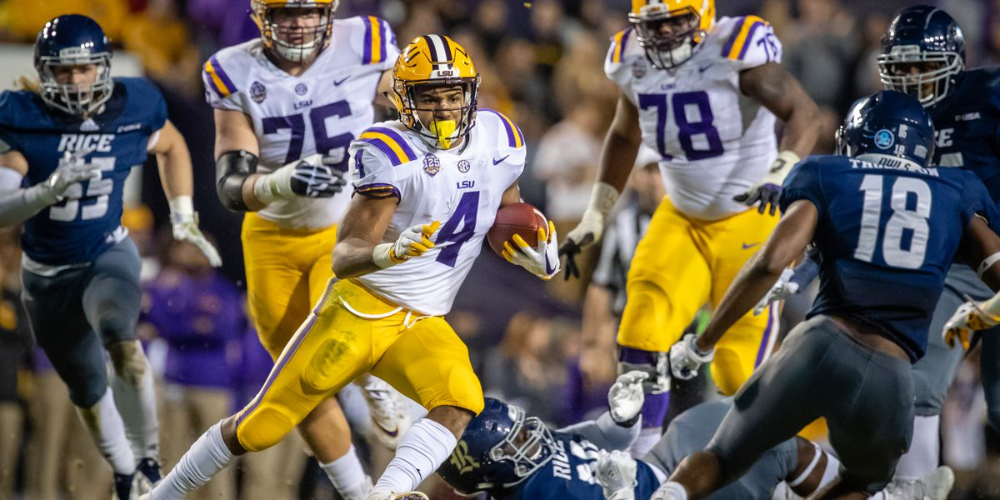

The game was certainly memorable as well. LSU rolled to a 42-10 win over the Rice Owls to run its record to 9-2 on the season and keep its Top 10 national ranking for another week. Star quarterback Joe Burrow threw for 307 yards and two touchdowns to lead the Tigers to victory, while running back Nick Brossette (pictured) rushed for 69 yards and two more touchdowns on the ground.
The Tigers later ended the 2018 season with a 10-3 overall record and No. 6 national ranking thanks largely to a Fiesta Bowl win over Top 10 Central Florida on New Years Day. The team carried that momentum into the 2019 season where it currently ranks No. 1 in the country with a perfect 13-0 record and SEC Championship as the top seed heading into the College Football Playoff.
Page 6